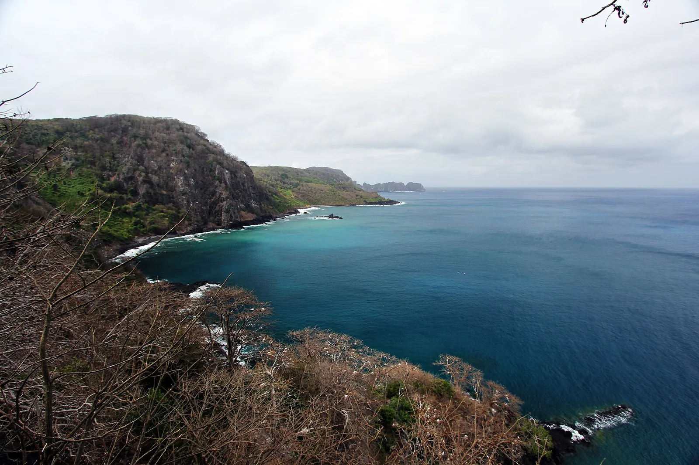
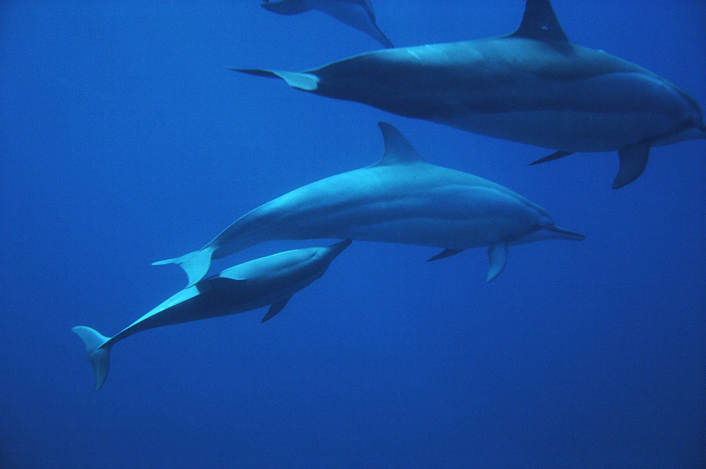
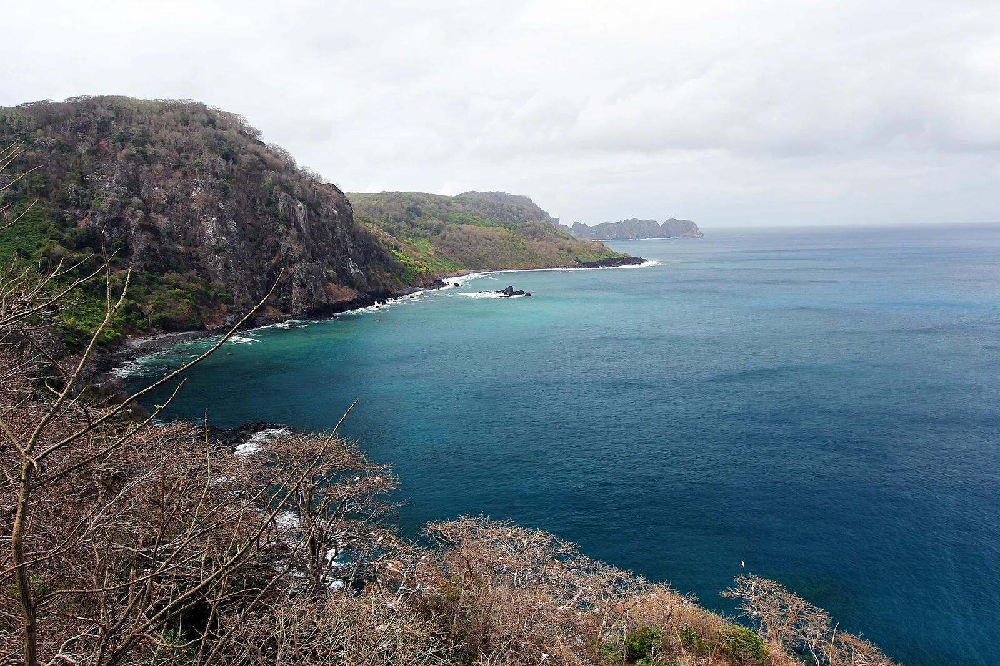

E8 · Este
E8 · Osten
E8 · East
Fernando de Noronha
Vi tortugas, delfines, pájaros de mar, en un archipiélago que se cuida dejando entrar a muy pocos.
Ich sah Schildkröten, Delfine, Meeresvögel, auf einem Archipel, der sich schützt, indem er nur sehr wenige hereinlässt.
I saw turtles, dolphins, sea birds, in an archipelago that looks after itself by letting very few in.
Información
El archipiélago de Fernando de Noronha está a unos 340 kilómetros de la costa brasileña y son picos volcánicos de una cadena de montañas sumergida. El sitio de Patrimonio Mundial cubre 42.270 hectáreas, con una zona de amortiguación de 140.713, e incluye cerca del 70 % de la isla principal, 21 islas e islotes menores y las aguas hasta los 50 metros de profundidad.
Junto con el Atol das Rocas —el único atolón del Atlántico Sur, 150 kilómetros al oeste— reúne buena parte de la superficie insular de todo el Atlántico Sur. Sus aguas son decisivas para la reproducción y la alimentación de atunes, tiburones, tortugas y mamíferos marinos.
Las islas concentran la mayor cantidad de aves marinas tropicales del Atlántico occidental. En la Baía dos Golfinhos vive una población residente de delfines, y en el Atol das Rocas la marea baja descubre lagunas y piletas naturales llenas de peces.
Information
El archipiélago de Fernando de Noronha está a unos 340 kilómetros de la costa brasileña y son picos volcánicos de una cadena de montañas sumergida. El sitio de Patrimonio Mundial cubre 42.270 hectáreas, con una zona de amortiguación de 140.713, e incluye cerca del 70 % de la isla principal, 21 islas e islotes menores y las aguas hasta los 50 metros de profundidad.
Junto con el Atol das Rocas —el único atolón del Atlántico Sur, 150 kilómetros al oeste— reúne buena parte de la superficie insular de todo el Atlántico Sur. Sus aguas son decisivas para la reproducción y la alimentación de atunes, tiburones, tortugas y mamíferos marinos.
Las islas concentran la mayor cantidad de aves marinas tropicales del Atlántico occidental. En la Baía dos Golfinhos vive una población residente de delfines, y en el Atol das Rocas la marea baja descubre lagunas y piletas naturales llenas de peces.
Information
El archipiélago de Fernando de Noronha está a unos 340 kilómetros de la costa brasileña y son picos volcánicos de una cadena de montañas sumergida. El sitio de Patrimonio Mundial cubre 42.270 hectáreas, con una zona de amortiguación de 140.713, e incluye cerca del 70 % de la isla principal, 21 islas e islotes menores y las aguas hasta los 50 metros de profundidad.
Junto con el Atol das Rocas —el único atolón del Atlántico Sur, 150 kilómetros al oeste— reúne buena parte de la superficie insular de todo el Atlántico Sur. Sus aguas son decisivas para la reproducción y la alimentación de atunes, tiburones, tortugas y mamíferos marinos.
Las islas concentran la mayor cantidad de aves marinas tropicales del Atlántico occidental. En la Baía dos Golfinhos vive una población residente de delfines, y en el Atol das Rocas la marea baja descubre lagunas y piletas naturales llenas de peces.
La UICN evalúa el sitio como de «preocupación significativa». Hay marco legal y sistema de manejo, pero la implementación es insuficiente en varias áreas y los recursos de monitoreo no alcanzan para controlar las amenazas.
La pesca industrial en las cercanías viene impactando sobre las especies pelágicas y en particular sobre los tiburones, y la concentración de embarcaciones agrava el problema. El archipiélago que se cuida dejando entrar a muy pocos no controla lo que pasa del otro lado de su límite.
La UICN evalúa el sitio como de «preocupación significativa». Hay marco legal y sistema de manejo, pero la implementación es insuficiente en varias áreas y los recursos de monitoreo no alcanzan para controlar las amenazas.
La pesca industrial en las cercanías viene impactando sobre las especies pelágicas y en particular sobre los tiburones, y la concentración de embarcaciones agrava el problema. El archipiélago que se cuida dejando entrar a muy pocos no controla lo que pasa del otro lado de su límite.
La UICN evalúa el sitio como de «preocupación significativa». Hay marco legal y sistema de manejo, pero la implementación es insuficiente en varias áreas y los recursos de monitoreo no alcanzan para controlar las amenazas.
La pesca industrial en las cercanías viene impactando sobre las especies pelágicas y en particular sobre los tiburones, y la concentración de embarcaciones agrava el problema. El archipiélago que se cuida dejando entrar a muy pocos no controla lo que pasa del otro lado de su límite.
Fuentes
Quellen
Sources
- UICN, Perspectiva del Patrimonio Mundial (evaluación 2025), Brazilian Atlantic Islands: Fernando de Noronha and Atol das Rocas Reserves — https://worldheritageoutlook.iucn.org/explore-sites/brazilian-atlantic-islands-fernando-de-noronha-and-atol-das-rocas-reserves
Galería
Galerie
Gallery




Fuentes
Quellen
Sources
- UNESCO, Centro del Patrimonio Mundial, Brazilian Atlantic Islands: Fernando de Noronha and Atol das Rocas Reserves — https://whc.unesco.org/en/list/1000/ consultado 2026-10-05abgerufen 2026-10-05accessed 2026-10-05